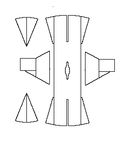

Found in the Kraglund Bog by Viborg in Denmark, it was found with a pair of shoes (now lost) but were of a pointed toe 12th-13th Century design.
According to "Stella" hecaba@inspire.net.nz to 75years@yahoogroups 15 Feb 2002; Porl Grinder-Hansen, curator Danish Middle Ages and Renaissance, Nat. Mus. of Denmark had this carbon14 dated in 1998 by the AMS-laboratory in �rhus, Jutland, using the accelerator technique and calibrated according to Stuiver and Pearson 1993. It was dated to c.1040-1155.
There is a 7 cm (2.76") opening extending down from the neck opening.
The material of this outfit is a "threeshaft frieze".
Go to Tunic Page; Kraglund Site Page or Proceed
Some Clothing of the Middle Ages, by I. Marc Carlson, Copyright 1996, 2002 This code is given for the free exchange of information, provided the Author's Name is included in all future revisions, and no money change hands-